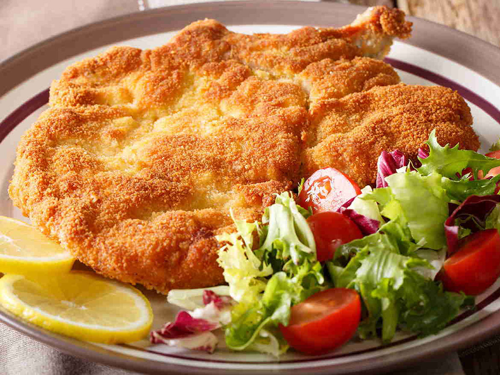

Cotoletta
Home

Description
Cotoletta alla Milanese is an iconic dish of Lombard cuisine: a veal cutlet breaded in eggs and breadcrumbs, fried in clarified butter until golden and crispy.
Traditionally served with lemon slices, it is often accompanied by Milanese risotto or fried potatoes.
Ingredients
- Veal ribs
- Eggs
- Breadcrumbs
- Clarified butter (for frying)
- Salt (for frying)
- Pound the meat - Lightly flatten the veal chops to even thickness.
- Beat the eggs - In a shallow bowl, beat the eggs.
- Bread the chops - Dip each chop in egg, then coat well with breadcrumbs. Press firmly to adhere.
- Fry - Heat clarified butter in a pan. Fry the chops over medium heat until golden on both sides.
- Drain and season - Let rest on paper towels. Salt to taste and serve hot